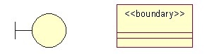
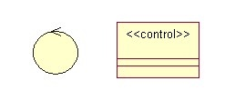
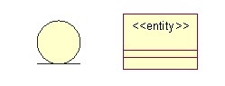
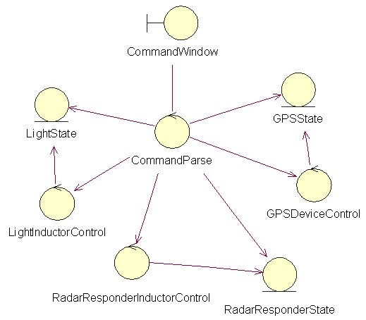
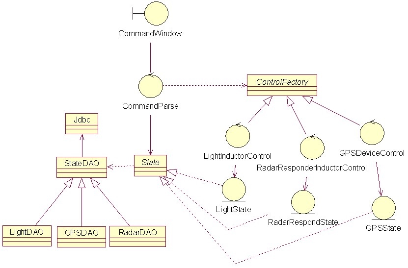

UML时序图使用说明
边界类
边界对象的抽象，通常是用来完成参与者（用户、外部系统）与系统之间交互的对象，例如：From、对话框、菜单、接口等。 图例：

边界类用于描述外部参与者与系统之间的交互。 边界类是一种用于对系统外部环境与其内部运作之间的交互进行建模的类。这种交互包括转换事件，并记录系统表示方式（例如接口）中的变更。 识别边界类可以帮助开发人员识别出用户对界面的需求。
边界类用于系统与角色之间的交互，包括从用户和外部系统接收信息和请求。 边界类为依赖于角色的系统部分建模，解释和汇集系统边界需求，这样用户界面的 变化通常被隔离在一个或多个边界类上。边界类经常代表窗口、表单、交互界面等， 它描述交互所能得到的结果而不是交互的物理实现 边界类包括主窗体类、查询窗体类、表单录入窗体类、自动弹出窗体类、物资 查询窗体类、库存事物处理查询窗体类等
边界类位于系统与外界的交界处，窗体、报表、以及表示通讯协议的类、直接与外部设备交互的类、直接与外部系统交互的类等都是边界类。 通过用例图可以确定需要的边界类，每个Actor/Use Case对至少要一个边界类，但并非每个Actor/Use Case对要唯一的边界类。
控制类
控制对象的抽象，主要用来体现应用程序的执行逻辑，将其抽象出来，可以使变化不影响用户界面和数据库中的表。 图例：

控制类用于描述一个用例所具有的事件流控制行为，控制一个用例中的事件顺序。 控制类是控制其他类工作的类。每个用例通常有一个控制类，控制用例中的事件顺序，控制类也可以在多个用例间共用。其他类并不向控制类发送很多消息，而是由控制类发出很多消息。 控制类可以认为是处理业务逻辑、控制业务流程的类。 例如： 考试系统中当学生在考试时 ,学生与试卷交互， 那么学生和试卷都是实体类,而考试时间,规则,分数都是边界类，当考试完了将试卷提交给试卷保管者,则试卷则成了边界类。
实体类
实体对象的抽象，通常来自域模型（现实世界），用来描述具体的实体，通常映射到数据库表格与文件中。 图例：

实体类主要是作为数据管理和业务逻辑处理层面上存在的类别。 实体类的主要职责是存储和管理系统内部的信息，它也可以有行为，甚至很复杂的行为，但这些行为必须与它所代表的实体对象密切相关。 实体类保存要放进持久存储体的信息。持久存储体就是数据库、文件等可以永久存储数据的介质。实体类可以通过事件流和交互图发现。通常每个实体类在数据库中有相应的表，实体类中的属性对应数据库表中的字段。 实体类是用于对必须存储的信息和相关行为建模的类。实体对象（实体类的实例）用于保存和更新一些现象的有关信息，例如：事件、人员或者一些现实生活中的对象。
示例
分析模型实例一

图解：
- 边界类：
CommandWindow 负责接受用户输入的命令并向用户显示命令结果
- 控制类：
LightInductorControl 负责与“航标灯器”感应器通讯，获取航标灯器当前数据
RadarResponderInductorControl 负责与“雷达应答器”感应器通讯，获取雷达应答器当前数据
GPSDeviceControl 负责与“GPS定位设备”感应器通讯，获取当前位置
- 实体类：
LightState 负责存储航标灯器状态数据
RadarResponderState 负责存储雷达应答器状态数据
GPSState 负责GPS定位数据
分析模型实例二

总结
-
边界类，描述外部与系统内部交互的类；
-
控制类，控制其他类；
-
实体类，存储信息和相关行为的类；